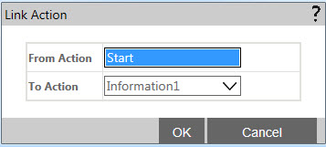

No
Link Actions
This window is opened when you click the Link tool in the toolbar.

Link Actions window
You can use the following controls to link two activities in the design mosaic:
- From Action - Specify the first action to link by selecting it from this drop-down
- To Action - Specify the second action to link by selecting it from this drop-down
- OK - After selecting the two activities, click this button to link them
- Cancel - Click this button to cancel the selection and close this window